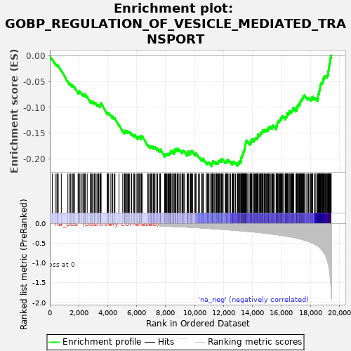
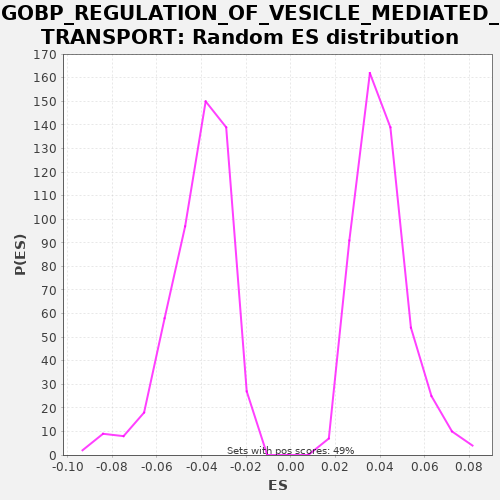

| | | Dataset | A_X_tradeoff |
| Phenotype | NoPhenotypeAvailable |
| Upregulated in class | na_neg |
| GeneSet | GOBP_REGULATION_OF_VESICLE_MEDIATED_TRANSPORT |
| Enrichment Score (ES) | -0.21444881 |
| Normalized Enrichment Score (NES) | -5.1929116 |
| Nominal p-value | 0.0 |
| FDR q-value | 0.0 |
| FWER p-Value | 0.0 |
Table: GSEA Results Summary

Fig 1: Enrichment plot: GOBP_REGULATION_OF_VESICLE_MEDIATED_TRANSPORT
Profile of the Running ES Score & Positions of GeneSet Members on the Rank Ordered List
| SYMBOL | RANK IN GENE LIST | RANK METRIC SCORE | RUNNING ES | CORE ENRICHMENT | | 1 | CAV3 | 175 | -0.001 | -0.0070 | No |
| 2 | SFTPD | 367 | -0.002 | -0.0148 | No |
| 3 | ADIPOQ | 487 | -0.003 | -0.0189 | No |
| 4 | BVES | 514 | -0.003 | -0.0181 | No |
| 5 | SYT8 | 583 | -0.003 | -0.0194 | No |
| 6 | SDC1 | 793 | -0.004 | -0.0282 | No |
| 7 | HYAL3 | 1246 | -0.007 | -0.0498 | No |
| 8 | SLC17A7 | 1362 | -0.007 | -0.0537 | No |
| 9 | IL15 | 1440 | -0.008 | -0.0555 | No |
| 10 | RAB27B | 1544 | -0.008 | -0.0587 | No |
| 11 | NEU3 | 1549 | -0.008 | -0.0567 | No |
| 12 | LYPLA1 | 1622 | -0.009 | -0.0583 | No |
| 13 | FER1L5 | 1723 | -0.009 | -0.0614 | No |
| 14 | PLA2G5 | 1951 | -0.011 | -0.0711 | No |
| 15 | HMOX1 | 2002 | -0.011 | -0.0715 | No |
| 16 | MAPK15 | 2010 | -0.011 | -0.0697 | No |
| 17 | PPARG | 2024 | -0.011 | -0.0682 | No |
| 18 | LRPAP1 | 2084 | -0.012 | -0.0691 | No |
| 19 | ALOX15 | 2216 | -0.012 | -0.0737 | No |
| 20 | TRPV6 | 2289 | -0.013 | -0.0753 | No |
| 21 | P2RY1 | 2335 | -0.013 | -0.0755 | No |
| 22 | PRKCG | 2415 | -0.014 | -0.0774 | No |
| 23 | SRC | 2434 | -0.014 | -0.0762 | No |
| 24 | APOC1 | 2440 | -0.014 | -0.0742 | No |
| 25 | APELA | 2583 | -0.014 | -0.0795 | No |
| 26 | IL13RA2 | 2810 | -0.016 | -0.0892 | No |
| 27 | GPC3 | 2834 | -0.016 | -0.0882 | No |
| 28 | ZDHHC2 | 2874 | -0.016 | -0.0880 | No |
| 29 | VSNL1 | 2958 | -0.017 | -0.0902 | No |
| 30 | SYT15 | 2972 | -0.017 | -0.0887 | No |
| 31 | LGALS9 | 3070 | -0.018 | -0.0916 | No |
| 32 | UNC13D | 3101 | -0.018 | -0.0909 | No |
| 33 | RALA | 3146 | -0.018 | -0.0910 | No |
| 34 | SYT6 | 3253 | -0.019 | -0.0944 | No |
| 35 | HFE | 3331 | -0.020 | -0.0963 | No |
| 36 | PCSK9 | 3367 | -0.020 | -0.0959 | No |
| 37 | PREB | 3451 | -0.020 | -0.0981 | No |
| 38 | SNX12 | 3480 | -0.021 | -0.0973 | No |
| 39 | NTF3 | 3483 | -0.021 | -0.0952 | No |
| 40 | CPLANE2 | 3508 | -0.021 | -0.0943 | No |
| 41 | SELE | 3531 | -0.021 | -0.0932 | No |
| 42 | CDC42 | 3535 | -0.021 | -0.0912 | No |
| 43 | SYT12 | 3966 | -0.024 | -0.1116 | No |
| 44 | MSN | 3997 | -0.024 | -0.1110 | No |
| 45 | PPT1 | 4036 | -0.025 | -0.1108 | No |
| 46 | PRAM1 | 4067 | -0.025 | -0.1101 | No |
| 47 | PLA2G4E | 4215 | -0.026 | -0.1157 | No |
| 48 | FGB | 4324 | -0.027 | -0.1191 | No |
| 49 | MICAL1 | 4337 | -0.027 | -0.1176 | No |
| 50 | C4A | 4436 | -0.028 | -0.1205 | No |
| 51 | SYTL4 | 4499 | -0.029 | -0.1216 | No |
| 52 | GIPC1 | 4779 | -0.031 | -0.1341 | No |
| 53 | SNAPIN | 5035 | -0.034 | -0.1453 | No |
| 54 | PLSCR1 | 5147 | -0.035 | -0.1489 | No |
| 55 | EGF | 5171 | -0.035 | -0.1479 | No |
| 56 | APLN | 5184 | -0.035 | -0.1463 | No |
| 57 | EXPH5 | 5195 | -0.036 | -0.1446 | No |
| 58 | ANGPT1 | 5248 | -0.036 | -0.1452 | No |
| 59 | LRP1 | 5335 | -0.037 | -0.1475 | No |
| 60 | DKK1 | 5337 | -0.037 | -0.1453 | No |
| 61 | SFRP4 | 5409 | -0.038 | -0.1469 | No |
| 62 | ABCA7 | 5463 | -0.039 | -0.1475 | No |
| 63 | RAB31 | 5495 | -0.039 | -0.1469 | No |
| 64 | NOTCH1 | 5628 | -0.040 | -0.1516 | No |
| 65 | PTX3 | 5647 | -0.041 | -0.1504 | No |
| 66 | NR1H3 | 5767 | -0.042 | -0.1544 | No |
| 67 | APOA1 | 5821 | -0.043 | -0.1550 | No |
| 68 | RAC1 | 5866 | -0.043 | -0.1551 | No |
| 69 | RIN3 | 5868 | -0.043 | -0.1529 | No |
| 70 | SMAP1 | 6013 | -0.045 | -0.1583 | No |
| 71 | RAB12 | 6079 | -0.046 | -0.1595 | No |
| 72 | LGI3 | 6091 | -0.046 | -0.1579 | No |
| 73 | RAB5C | 6111 | -0.046 | -0.1567 | No |
| 74 | CLU | 6165 | -0.047 | -0.1573 | No |
| 75 | PKDCC | 6195 | -0.047 | -0.1566 | No |
| 76 | ADORA2A | 6303 | -0.049 | -0.1600 | No |
| 77 | TULP1 | 6307 | -0.049 | -0.1580 | No |
| 78 | FGR | 6313 | -0.049 | -0.1560 | No |
| 79 | FGG | 6337 | -0.049 | -0.1550 | No |
| 80 | AHSG | 6402 | -0.050 | -0.1562 | No |
| 81 | F2RL1 | 6767 | -0.055 | -0.1731 | No |
| 82 | IL15RA | 6828 | -0.056 | -0.1741 | No |
| 83 | GAS1 | 6931 | -0.058 | -0.1773 | No |
| 84 | BIN1 | 6940 | -0.058 | -0.1755 | No |
| 85 | EEF2K | 6988 | -0.058 | -0.1757 | No |
| 86 | ARRB2 | 7017 | -0.059 | -0.1750 | No |
| 87 | APOA2 | 7077 | -0.059 | -0.1759 | No |
| 88 | ARRB1 | 7166 | -0.061 | -0.1783 | No |
| 89 | ARF6 | 7175 | -0.061 | -0.1765 | No |
| 90 | DRD4 | 7225 | -0.062 | -0.1769 | No |
| 91 | ACTN2 | 7268 | -0.062 | -0.1769 | No |
| 92 | LYN | 7394 | -0.064 | -0.1813 | No |
| 93 | PTPRJ | 7399 | -0.064 | -0.1793 | No |
| 94 | INSR | 7450 | -0.065 | -0.1797 | No |
| 95 | CD151 | 7586 | -0.067 | -0.1846 | No |
| 96 | VAMP7 | 7626 | -0.067 | -0.1844 | No |
| 97 | WNT5A | 7637 | -0.067 | -0.1828 | No |
| 98 | NOD2 | 7652 | -0.068 | -0.1813 | No |
| 99 | IL2RB | 7934 | -0.072 | -0.1939 | No |
| 100 | HTR1B | 7940 | -0.072 | -0.1919 | No |
| 101 | STAP1 | 7982 | -0.073 | -0.1919 | No |
| 102 | RINT1 | 8007 | -0.073 | -0.1909 | No |
| 103 | CACNA1G | 8030 | -0.074 | -0.1899 | No |
| 104 | RAB29 | 8072 | -0.074 | -0.1898 | No |
| 105 | STON1 | 8144 | -0.076 | -0.1914 | No |
| 106 | SNF8 | 8175 | -0.076 | -0.1907 | No |
| 107 | ANKRD13D | 8212 | -0.077 | -0.1904 | No |
| 108 | MERTK | 8244 | -0.077 | -0.1899 | No |
| 109 | AKT2 | 8262 | -0.077 | -0.1885 | No |
| 110 | STXBP3 | 8315 | -0.079 | -0.1891 | No |
| 111 | TNF | 8326 | -0.079 | -0.1874 | No |
| 112 | UNC119 | 8345 | -0.079 | -0.1861 | No |
| 113 | HPCA | 8368 | -0.079 | -0.1851 | No |
| 114 | TOR1A | 8385 | -0.080 | -0.1837 | No |
| 115 | AP2S1 | 8459 | -0.081 | -0.1853 | No |
| 116 | SAR1B | 8568 | -0.082 | -0.1888 | No |
| 117 | NR1H2 | 8576 | -0.083 | -0.1870 | No |
| 118 | VTN | 8583 | -0.083 | -0.1851 | No |
| 119 | FES | 8584 | -0.083 | -0.1829 | No |
| 120 | DYSF | 8664 | -0.084 | -0.1848 | No |
| 121 | GNAI2 | 8667 | -0.084 | -0.1827 | No |
| 122 | RAB4B | 8670 | -0.084 | -0.1806 | No |
| 123 | P2RX1 | 8722 | -0.085 | -0.1811 | No |
| 124 | EHD1 | 8808 | -0.087 | -0.1834 | No |
| 125 | C4B | 8826 | -0.087 | -0.1821 | No |
| 126 | SLC11A1 | 8828 | -0.087 | -0.1799 | No |
| 127 | SERPINE1 | 8878 | -0.088 | -0.1803 | No |
| 128 | EZR | 8972 | -0.090 | -0.1830 | No |
| 129 | HIP1 | 9032 | -0.090 | -0.1839 | No |
| 130 | RAB15 | 9132 | -0.092 | -0.1869 | No |
| 131 | C2 | 9145 | -0.092 | -0.1853 | No |
| 132 | CPLX3 | 9171 | -0.093 | -0.1844 | No |
| 133 | LRRK2 | 9194 | -0.093 | -0.1833 | No |
| 134 | SMPD1 | 9258 | -0.095 | -0.1845 | No |
| 135 | CDK5 | 9308 | -0.095 | -0.1848 | No |
| 136 | VAMP8 | 9489 | -0.099 | -0.1921 | No |
| 137 | IL2RG | 9515 | -0.099 | -0.1912 | No |
| 138 | ITGB3 | 9526 | -0.099 | -0.1895 | No |
| 139 | FOXF1 | 9548 | -0.100 | -0.1884 | No |
| 140 | ITGA2 | 9549 | -0.100 | -0.1862 | No |
| 141 | PRKN | 9568 | -0.100 | -0.1850 | No |
| 142 | CD47 | 9702 | -0.103 | -0.1897 | No |
| 143 | RAB2B | 9703 | -0.103 | -0.1875 | No |
| 144 | PRTN3 | 9732 | -0.104 | -0.1868 | No |
| 145 | VAMP4 | 9756 | -0.104 | -0.1858 | No |
| 146 | ITGAV | 9776 | -0.105 | -0.1846 | No |
| 147 | LYAR | 9807 | -0.105 | -0.1840 | No |
| 148 | GATA2 | 9869 | -0.107 | -0.1850 | No |
| 149 | SNX3 | 10011 | -0.109 | -0.1902 | No |
| 150 | PTPN23 | 10084 | -0.111 | -0.1918 | No |
| 151 | LRSAM1 | 10087 | -0.111 | -0.1897 | No |
| 152 | SAR1A | 10100 | -0.111 | -0.1881 | No |
| 153 | SOD1 | 10264 | -0.115 | -0.1945 | No |
| 154 | NEDD4L | 10353 | -0.116 | -0.1969 | No |
| 155 | VPS11 | 10486 | -0.119 | -0.2016 | No |
| 156 | APOE | 10523 | -0.120 | -0.2013 | No |
| 157 | VPS18 | 10573 | -0.121 | -0.2017 | No |
| 158 | CD22 | 10597 | -0.122 | -0.2007 | No |
| 159 | DGKQ | 10611 | -0.122 | -0.1992 | No |
| 160 | SLC4A8 | 10815 | -0.127 | -0.2076 | No |
| 161 | WDR54 | 10874 | -0.129 | -0.2085 | No |
| 162 | NECAB2 | 10911 | -0.130 | -0.2082 | No |
| 163 | APOC2 | 10919 | -0.130 | -0.2063 | No |
| 164 | OPHN1 | 10964 | -0.131 | -0.2064 | No |
| 165 | SNX17 | 11006 | -0.132 | -0.2064 | No |
| 166 | RAB5B | 11109 | -0.134 | -0.2096 | No |
| 167 | ARHGAP44 | 11203 | -0.137 | -0.2122 | Yes |
| 168 | SCARB1 | 11207 | -0.137 | -0.2102 | Yes |
| 169 | CLN3 | 11217 | -0.137 | -0.2085 | Yes |
| 170 | GAB2 | 11237 | -0.137 | -0.2073 | Yes |
| 171 | PTAFR | 11253 | -0.138 | -0.2058 | Yes |
| 172 | CFTR | 11287 | -0.139 | -0.2054 | Yes |
| 173 | ANO6 | 11294 | -0.139 | -0.2035 | Yes |
| 174 | HMGB1 | 11364 | -0.141 | -0.2049 | Yes |
| 175 | CHRNA5 | 11448 | -0.143 | -0.2071 | Yes |
| 176 | IL1B | 11507 | -0.144 | -0.2079 | Yes |
| 177 | PIK3CB | 11520 | -0.145 | -0.2063 | Yes |
| 178 | SYT3 | 11580 | -0.146 | -0.2072 | Yes |
| 179 | STX18 | 11636 | -0.148 | -0.2079 | Yes |
| 180 | RAB8B | 11646 | -0.148 | -0.2062 | Yes |
| 181 | ARFGAP1 | 11650 | -0.148 | -0.2041 | Yes |
| 182 | NDRG4 | 11688 | -0.149 | -0.2039 | Yes |
| 183 | DGKD | 11732 | -0.150 | -0.2039 | Yes |
| 184 | EIPR1 | 11754 | -0.151 | -0.2028 | Yes |
| 185 | BMP2K | 11784 | -0.152 | -0.2021 | Yes |
| 186 | DOCK2 | 11850 | -0.153 | -0.2034 | Yes |
| 187 | TFR2 | 11873 | -0.154 | -0.2023 | Yes |
| 188 | ITSN1 | 11877 | -0.154 | -0.2003 | Yes |
| 189 | CACNB2 | 11911 | -0.154 | -0.1998 | Yes |
| 190 | TBC1D5 | 11979 | -0.156 | -0.2011 | Yes |
| 191 | MAPK3 | 12124 | -0.160 | -0.2065 | Yes |
| 192 | NRP1 | 12149 | -0.161 | -0.2055 | Yes |
| 193 | STXBP6 | 12189 | -0.162 | -0.2054 | Yes |
| 194 | CD300A | 12215 | -0.162 | -0.2045 | Yes |
| 195 | ANKRD27 | 12226 | -0.162 | -0.2028 | Yes |
| 196 | STAM | 12289 | -0.164 | -0.2039 | Yes |
| 197 | VPS28 | 12293 | -0.164 | -0.2018 | Yes |
| 198 | SPHK1 | 12323 | -0.165 | -0.2011 | Yes |
| 199 | HCK | 12427 | -0.168 | -0.2043 | Yes |
| 200 | STXBP2 | 12488 | -0.170 | -0.2053 | Yes |
| 201 | CCL2 | 12605 | -0.173 | -0.2092 | Yes |
| 202 | ZFYVE16 | 12627 | -0.174 | -0.2081 | Yes |
| 203 | RNF139 | 12644 | -0.174 | -0.2067 | Yes |
| 204 | PLA2G3 | 12660 | -0.175 | -0.2053 | Yes |
| 205 | PACSIN3 | 12693 | -0.175 | -0.2048 | Yes |
| 206 | NUMB | 12739 | -0.177 | -0.2049 | Yes |
| 207 | AP2A1 | 12836 | -0.179 | -0.2078 | Yes |
| 208 | DLG4 | 12953 | -0.183 | -0.2117 | Yes |
| 209 | MYO18A | 12983 | -0.184 | -0.2110 | Yes |
| 210 | PPP3CC | 12997 | -0.184 | -0.2095 | Yes |
| 211 | CBL | 13012 | -0.185 | -0.2080 | Yes |
| 212 | RAB33B | 13030 | -0.185 | -0.2067 | Yes |
| 213 | RSPO1 | 13057 | -0.186 | -0.2059 | Yes |
| 214 | PRKAA1 | 13127 | -0.188 | -0.2073 | Yes |
| 215 | C3 | 13130 | -0.188 | -0.2052 | Yes |
| 216 | SORL1 | 13140 | -0.189 | -0.2034 | Yes |
| 217 | TLR2 | 13202 | -0.191 | -0.2044 | Yes |
| 218 | RUBCN | 13211 | -0.191 | -0.2027 | Yes |
| 219 | BET1L | 13215 | -0.191 | -0.2006 | Yes |
| 220 | SYK | 13216 | -0.191 | -0.1984 | Yes |
| 221 | EHD4 | 13228 | -0.192 | -0.1968 | Yes |
| 222 | PIP4P2 | 13251 | -0.192 | -0.1957 | Yes |
| 223 | ARF1 | 13287 | -0.193 | -0.1954 | Yes |
| 224 | RAB5A | 13294 | -0.194 | -0.1935 | Yes |
| 225 | SPHK2 | 13297 | -0.194 | -0.1914 | Yes |
| 226 | MAP2K2 | 13330 | -0.195 | -0.1908 | Yes |
| 227 | TSG101 | 13352 | -0.196 | -0.1897 | Yes |
| 228 | ATP6AP1 | 13364 | -0.196 | -0.1881 | Yes |
| 229 | SCFD1 | 13379 | -0.196 | -0.1866 | Yes |
| 230 | ABL1 | 13395 | -0.197 | -0.1852 | Yes |
| 231 | LAMP1 | 13424 | -0.198 | -0.1845 | Yes |
| 232 | REST | 13438 | -0.199 | -0.1830 | Yes |
| 233 | BTBD9 | 13442 | -0.199 | -0.1809 | Yes |
| 234 | LDLRAP1 | 13478 | -0.200 | -0.1805 | Yes |
| 235 | CAV1 | 13484 | -0.200 | -0.1786 | Yes |
| 236 | TBC1D20 | 13487 | -0.200 | -0.1765 | Yes |
| 237 | DRD2 | 13501 | -0.201 | -0.1750 | Yes |
| 238 | PLD1 | 13502 | -0.201 | -0.1728 | Yes |
| 239 | CSK | 13522 | -0.202 | -0.1716 | Yes |
| 240 | ITGAM | 13531 | -0.202 | -0.1698 | Yes |
| 241 | PRKAR1B | 13536 | -0.202 | -0.1678 | Yes |
| 242 | RAB3D | 13562 | -0.203 | -0.1669 | Yes |
| 243 | LRRTM2 | 13577 | -0.203 | -0.1654 | Yes |
| 244 | MCTP1 | 13591 | -0.204 | -0.1639 | Yes |
| 245 | SGIP1 | 13674 | -0.207 | -0.1660 | Yes |
| 246 | GAS6 | 13770 | -0.209 | -0.1688 | Yes |
| 247 | HTR2A | 13842 | -0.212 | -0.1703 | Yes |
| 248 | RUFY2 | 13863 | -0.212 | -0.1692 | Yes |
| 249 | RAP1A | 13892 | -0.213 | -0.1684 | Yes |
| 250 | ARHGAP1 | 13898 | -0.214 | -0.1665 | Yes |
| 251 | PTPN1 | 13906 | -0.214 | -0.1647 | Yes |
| 252 | GRIK5 | 13928 | -0.215 | -0.1636 | Yes |
| 253 | AP2B1 | 13960 | -0.216 | -0.1630 | Yes |
| 254 | PGAP1 | 13965 | -0.216 | -0.1610 | Yes |
| 255 | CALY | 14085 | -0.220 | -0.1650 | Yes |
| 256 | USP46 | 14092 | -0.221 | -0.1631 | Yes |
| 257 | FCGR2B | 14128 | -0.222 | -0.1628 | Yes |
| 258 | PYCARD | 14159 | -0.223 | -0.1621 | Yes |
| 259 | CEACAM1 | 14161 | -0.223 | -0.1600 | Yes |
| 260 | CALM3 | 14202 | -0.224 | -0.1599 | Yes |
| 261 | HGS | 14232 | -0.226 | -0.1592 | Yes |
| 262 | SDC4 | 14289 | -0.228 | -0.1599 | Yes |
| 263 | PDPK1 | 14332 | -0.229 | -0.1600 | Yes |
| 264 | YIPF5 | 14355 | -0.230 | -0.1589 | Yes |
| 265 | PRKD1 | 14364 | -0.231 | -0.1571 | Yes |
| 266 | ACSL3 | 14372 | -0.231 | -0.1553 | Yes |
| 267 | HIP1R | 14382 | -0.232 | -0.1535 | Yes |
| 268 | ANKFY1 | 14396 | -0.232 | -0.1520 | Yes |
| 269 | ATG5 | 14468 | -0.235 | -0.1535 | Yes |
| 270 | ABCA2 | 14512 | -0.236 | -0.1536 | Yes |
| 271 | RAC2 | 14534 | -0.237 | -0.1525 | Yes |
| 272 | MTMR2 | 14550 | -0.238 | -0.1511 | Yes |
| 273 | EHD2 | 14563 | -0.239 | -0.1495 | Yes |
| 274 | RAB11B | 14594 | -0.240 | -0.1489 | Yes |
| 275 | CHMP3 | 14649 | -0.242 | -0.1495 | Yes |
| 276 | DTNBP1 | 14657 | -0.243 | -0.1477 | Yes |
| 277 | NCKAP1L | 14684 | -0.244 | -0.1468 | Yes |
| 278 | DAB2 | 14716 | -0.246 | -0.1463 | Yes |
| 279 | CHMP2A | 14717 | -0.246 | -0.1441 | Yes |
| 280 | CNST | 14802 | -0.249 | -0.1463 | Yes |
| 281 | AKAP5 | 14813 | -0.250 | -0.1446 | Yes |
| 282 | NCS1 | 14832 | -0.251 | -0.1433 | Yes |
| 283 | MAP2K1 | 14884 | -0.253 | -0.1438 | Yes |
| 284 | SNX33 | 14929 | -0.255 | -0.1439 | Yes |
| 285 | CSPG5 | 14981 | -0.257 | -0.1444 | Yes |
| 286 | ATXN2 | 14999 | -0.258 | -0.1431 | Yes |
| 287 | BACE1 | 15064 | -0.261 | -0.1442 | Yes |
| 288 | ARFIP1 | 15084 | -0.261 | -0.1430 | Yes |
| 289 | LMAN2 | 15094 | -0.262 | -0.1413 | Yes |
| 290 | ARC | 15110 | -0.263 | -0.1399 | Yes |
| 291 | HNRNPK | 15124 | -0.263 | -0.1384 | Yes |
| 292 | PTPRC | 15191 | -0.266 | -0.1396 | Yes |
| 293 | ATP13A2 | 15202 | -0.267 | -0.1379 | Yes |
| 294 | DVL1 | 15228 | -0.268 | -0.1370 | Yes |
| 295 | SH3GL1 | 15285 | -0.271 | -0.1378 | Yes |
| 296 | RAP1B | 15373 | -0.275 | -0.1402 | Yes |
| 297 | MIB1 | 15375 | -0.275 | -0.1380 | Yes |
| 298 | PTEN | 15378 | -0.275 | -0.1359 | Yes |
| 299 | CD84 | 15404 | -0.276 | -0.1350 | Yes |
| 300 | SYT5 | 15454 | -0.279 | -0.1354 | Yes |
| 301 | CD36 | 15534 | -0.282 | -0.1373 | Yes |
| 302 | DNAJC13 | 15637 | -0.287 | -0.1405 | Yes |
| 303 | ABL2 | 15657 | -0.288 | -0.1393 | Yes |
| 304 | RAB8A | 15658 | -0.288 | -0.1371 | Yes |
| 305 | ATG3 | 15665 | -0.289 | -0.1352 | Yes |
| 306 | PLCG2 | 15711 | -0.291 | -0.1353 | Yes |
| 307 | EPHA3 | 15715 | -0.291 | -0.1333 | Yes |
| 308 | CLASP2 | 15717 | -0.291 | -0.1311 | Yes |
| 309 | RAB4A | 15737 | -0.292 | -0.1299 | Yes |
| 310 | SDCBP | 15746 | -0.293 | -0.1281 | Yes |
| 311 | CD14 | 15768 | -0.294 | -0.1270 | Yes |
| 312 | VEGFA | 15816 | -0.296 | -0.1273 | Yes |
| 313 | CBLL1 | 15851 | -0.299 | -0.1269 | Yes |
| 314 | INPP5F | 15859 | -0.299 | -0.1251 | Yes |
| 315 | RIMS1 | 15879 | -0.300 | -0.1238 | Yes |
| 316 | SIRPA | 15926 | -0.302 | -0.1241 | Yes |
| 317 | RAB3GAP1 | 15947 | -0.303 | -0.1229 | Yes |
| 318 | RUFY1 | 15979 | -0.305 | -0.1223 | Yes |
| 319 | SH3GL2 | 15981 | -0.305 | -0.1202 | Yes |
| 320 | STX1B | 16017 | -0.307 | -0.1198 | Yes |
| 321 | MBTPS1 | 16041 | -0.308 | -0.1188 | Yes |
| 322 | MAGI2 | 16049 | -0.308 | -0.1170 | Yes |
| 323 | WASL | 16098 | -0.311 | -0.1173 | Yes |
| 324 | SNX4 | 16156 | -0.314 | -0.1181 | Yes |
| 325 | CD300LF | 16262 | -0.320 | -0.1214 | Yes |
| 326 | FER | 16283 | -0.321 | -0.1202 | Yes |
| 327 | TREM2 | 16299 | -0.322 | -0.1188 | Yes |
| 328 | AAK1 | 16328 | -0.323 | -0.1181 | Yes |
| 329 | ANKRD13B | 16354 | -0.325 | -0.1172 | Yes |
| 330 | GIT1 | 16380 | -0.327 | -0.1163 | Yes |
| 331 | AXL | 16386 | -0.327 | -0.1144 | Yes |
| 332 | STX1A | 16389 | -0.328 | -0.1123 | Yes |
| 333 | VPS4A | 16428 | -0.330 | -0.1121 | Yes |
| 334 | DNM2 | 16441 | -0.331 | -0.1105 | Yes |
| 335 | TSC2 | 16517 | -0.335 | -0.1122 | Yes |
| 336 | PACSIN2 | 16522 | -0.336 | -0.1102 | Yes |
| 337 | CDH13 | 16537 | -0.337 | -0.1088 | Yes |
| 338 | CLASP1 | 16546 | -0.337 | -0.1070 | Yes |
| 339 | CACNA1H | 16626 | -0.344 | -0.1089 | Yes |
| 340 | ATAD1 | 16678 | -0.347 | -0.1094 | Yes |
| 341 | CLIP3 | 16699 | -0.349 | -0.1082 | Yes |
| 342 | RAB11A | 16714 | -0.350 | -0.1068 | Yes |
| 343 | PDCD6IP | 16748 | -0.352 | -0.1063 | Yes |
| 344 | CNR1 | 16770 | -0.354 | -0.1052 | Yes |
| 345 | PICALM | 16796 | -0.355 | -0.1043 | Yes |
| 346 | DNM1L | 16809 | -0.356 | -0.1027 | Yes |
| 347 | ITGB2 | 16823 | -0.358 | -0.1012 | Yes |
| 348 | RAPGEF1 | 16861 | -0.360 | -0.1009 | Yes |
| 349 | TNK2 | 17006 | -0.372 | -0.1063 | Yes |
| 350 | RDX | 17032 | -0.374 | -0.1054 | Yes |
| 351 | MKLN1 | 17053 | -0.375 | -0.1043 | Yes |
| 352 | CBARP | 17056 | -0.376 | -0.1022 | Yes |
| 353 | SYT13 | 17065 | -0.376 | -0.1004 | Yes |
| 354 | GRIN3A | 17071 | -0.377 | -0.0984 | Yes |
| 355 | APPL1 | 17122 | -0.381 | -0.0989 | Yes |
| 356 | DNAJC5 | 17130 | -0.381 | -0.0970 | Yes |
| 357 | PRKCB | 17136 | -0.382 | -0.0951 | Yes |
| 358 | GOPC | 17192 | -0.387 | -0.0958 | Yes |
| 359 | CALR | 17241 | -0.391 | -0.0961 | Yes |
| 360 | TBC1D4 | 17248 | -0.392 | -0.0942 | Yes |
| 361 | STXBP5 | 17259 | -0.392 | -0.0925 | Yes |
| 362 | ANKRD13A | 17306 | -0.397 | -0.0927 | Yes |
| 363 | TUB | 17309 | -0.397 | -0.0906 | Yes |
| 364 | AP1G1 | 17316 | -0.398 | -0.0887 | Yes |
| 365 | USP7 | 17325 | -0.398 | -0.0869 | Yes |
| 366 | DOC2A | 17372 | -0.404 | -0.0872 | Yes |
| 367 | PREPL | 17388 | -0.405 | -0.0857 | Yes |
| 368 | C2CD5 | 17402 | -0.407 | -0.0842 | Yes |
| 369 | MAPK1 | 17435 | -0.410 | -0.0837 | Yes |
| 370 | ADRA2A | 17460 | -0.413 | -0.0827 | Yes |
| 371 | RAB10 | 17477 | -0.414 | -0.0814 | Yes |
| 372 | TRIM9 | 17513 | -0.418 | -0.0810 | Yes |
| 373 | RAB21 | 17516 | -0.418 | -0.0789 | Yes |
| 374 | FCER1G | 17529 | -0.420 | -0.0773 | Yes |
| 375 | RAB3A | 17573 | -0.424 | -0.0774 | Yes |
| 376 | ANXA1 | 17598 | -0.427 | -0.0765 | Yes |
| 377 | STON2 | 17710 | -0.437 | -0.0801 | Yes |
| 378 | VPS4B | 17823 | -0.451 | -0.0838 | Yes |
| 379 | RAB3B | 17837 | -0.452 | -0.0823 | Yes |
| 380 | APPL2 | 17882 | -0.459 | -0.0824 | Yes |
| 381 | BICD1 | 17913 | -0.462 | -0.0817 | Yes |
| 382 | GRIPAP1 | 18024 | -0.477 | -0.0853 | Yes |
| 383 | PPP3CB | 18041 | -0.481 | -0.0839 | Yes |
| 384 | B2M | 18063 | -0.484 | -0.0828 | Yes |
| 385 | RAB13 | 18124 | -0.495 | -0.0838 | Yes |
| 386 | NSF | 18126 | -0.496 | -0.0816 | Yes |
| 387 | SCYL2 | 18136 | -0.498 | -0.0799 | Yes |
| 388 | AHI1 | 18167 | -0.503 | -0.0793 | Yes |
| 389 | DOC2B | 18298 | -0.527 | -0.0839 | Yes |
| 390 | FMR1 | 18315 | -0.530 | -0.0825 | Yes |
| 391 | GREM1 | 18343 | -0.537 | -0.0818 | Yes |
| 392 | PPFIA2 | 18440 | -0.555 | -0.0846 | Yes |
| 393 | CADPS | 18509 | -0.572 | -0.0860 | Yes |
| 394 | CALM1 | 18516 | -0.575 | -0.0841 | Yes |
| 395 | CAMK1D | 18522 | -0.576 | -0.0821 | Yes |
| 396 | NLGN1 | 18538 | -0.580 | -0.0807 | Yes |
| 397 | APOA5 | 18539 | -0.581 | -0.0785 | Yes |
| 398 | KIF5B | 18541 | -0.581 | -0.0764 | Yes |
| 399 | SYT9 | 18549 | -0.584 | -0.0745 | Yes |
| 400 | APBA1 | 18574 | -0.591 | -0.0736 | Yes |
| 401 | CYBA | 18599 | -0.599 | -0.0726 | Yes |
| 402 | SYN1 | 18608 | -0.603 | -0.0708 | Yes |
| 403 | FLOT1 | 18612 | -0.603 | -0.0688 | Yes |
| 404 | MFGE8 | 18632 | -0.610 | -0.0676 | Yes |
| 405 | DLL1 | 18641 | -0.612 | -0.0658 | Yes |
| 406 | VAMP2 | 18654 | -0.614 | -0.0642 | Yes |
| 407 | SCAMP5 | 18679 | -0.621 | -0.0633 | Yes |
| 408 | ADCY1 | 18680 | -0.621 | -0.0611 | Yes |
| 409 | SYT2 | 18688 | -0.626 | -0.0592 | Yes |
| 410 | PICK1 | 18703 | -0.631 | -0.0578 | Yes |
| 411 | CD2AP | 18708 | -0.633 | -0.0558 | Yes |
| 412 | RIMS3 | 18733 | -0.641 | -0.0548 | Yes |
| 413 | UBQLN2 | 18749 | -0.647 | -0.0534 | Yes |
| 414 | STXBP1 | 18776 | -0.657 | -0.0526 | Yes |
| 415 | RPH3AL | 18815 | -0.677 | -0.0524 | Yes |
| 416 | CORO1A | 18854 | -0.695 | -0.0522 | Yes |
| 417 | RIMS4 | 18865 | -0.699 | -0.0505 | Yes |
| 418 | RAB27A | 18872 | -0.702 | -0.0486 | Yes |
| 419 | RACK1 | 18883 | -0.708 | -0.0469 | Yes |
| 420 | RAB17 | 18887 | -0.712 | -0.0448 | Yes |
| 421 | ATP2A2 | 18927 | -0.732 | -0.0447 | Yes |
| 422 | SYT17 | 18938 | -0.741 | -0.0430 | Yes |
| 423 | RAPGEF4 | 18956 | -0.751 | -0.0417 | Yes |
| 424 | ROCK1 | 18970 | -0.757 | -0.0402 | Yes |
| 425 | GSK3B | 19016 | -0.783 | -0.0403 | Yes |
| 426 | SH3GL3 | 19039 | -0.798 | -0.0393 | Yes |
| 427 | PPP3CA | 19103 | -0.859 | -0.0404 | Yes |
| 428 | PACSIN1 | 19150 | -0.914 | -0.0406 | Yes |
| 429 | KCNB1 | 19153 | -0.916 | -0.0385 | Yes |
| 430 | CDK5R1 | 19197 | -0.967 | -0.0386 | Yes |
| 431 | SYT11 | 19221 | -0.998 | -0.0376 | Yes |
| 432 | SYP | 19232 | -1.011 | -0.0359 | Yes |
| 433 | BSN | 19236 | -1.016 | -0.0338 | Yes |
| 434 | SNCA | 19238 | -1.018 | -0.0317 | Yes |
| 435 | STXBP5L | 19242 | -1.025 | -0.0296 | Yes |
| 436 | CPLX1 | 19263 | -1.051 | -0.0285 | Yes |
| 437 | LGALS3 | 19268 | -1.061 | -0.0265 | Yes |
| 438 | PROM2 | 19279 | -1.078 | -0.0248 | Yes |
| 439 | DNAJC6 | 19294 | -1.107 | -0.0233 | Yes |
| 440 | HAP1 | 19300 | -1.119 | -0.0214 | Yes |
| 441 | SYT1 | 19306 | -1.129 | -0.0194 | Yes |
| 442 | RAB3C | 19318 | -1.163 | -0.0178 | Yes |
| 443 | SMPD3 | 19331 | -1.196 | -0.0162 | Yes |
| 444 | SYT7 | 19343 | -1.229 | -0.0146 | Yes |
| 445 | ANXA2 | 19360 | -1.283 | -0.0132 | Yes |
| 446 | CD63 | 19368 | -1.323 | -0.0114 | Yes |
| 447 | CADPS2 | 19372 | -1.332 | -0.0094 | Yes |
| 448 | SNAP91 | 19377 | -1.355 | -0.0074 | Yes |
| 449 | RIMS2 | 19390 | -1.379 | -0.0058 | Yes |
| 450 | PCLO | 19392 | -1.381 | -0.0036 | Yes |
| 451 | RAB25 | 19421 | -1.548 | -0.0029 | Yes |
| 452 | CPLX2 | 19428 | -1.589 | -0.0010 | Yes |
| 453 | SYT4 | 19444 | -1.764 | 0.0004 | Yes |
Table: GSEA details [plain text format]

Fig 2: GOBP_REGULATION_OF_VESICLE_MEDIATED_TRANSPORT: Random ES distribution
Gene set null distribution of ES for GOBP_REGULATION_OF_VESICLE_MEDIATED_TRANSPORT